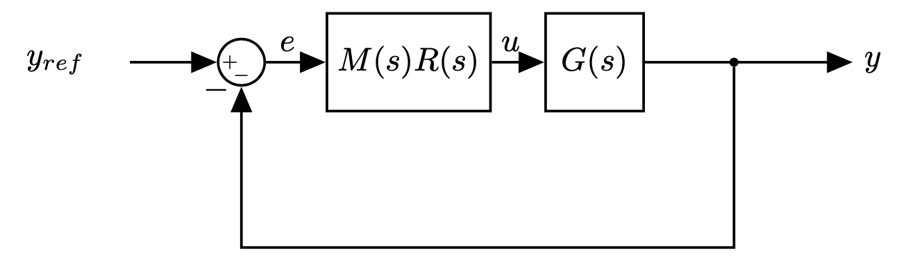

Main types of loops and transfer functions
The classical viewpoint
Standard “servo” or tracking configuration of classical feedback control:

\(R(s)\): Controller/Compensator
\(G(s)\): Plant
\(Y_{ref}(s)\): input (reference)
\(e(s)\): error
\(U(s)\): control signal
This is the “standard control loop”
Alternatives
- We can always reshape them into the standard form.
Disturbances
More in general:
- Load disturbance \(d\): assumed to act on the process input (but can enter in many different ways)
- Measurement noise \(n\)
- The process is a system with three inputs (control signal, load disturbance and measurement noise) and one output, the measured signal.
Or equivalently


- The feedback loop is influenced by three signals: \(y_{ref}\), \(d\), and \(n\).
- There are three interesting outputs: \(e\), \(u\), \(y\)
Comments - Attenuation of load disturbances is often a primary goal for control - Load disturbances are typically dominated by low frequencies (slow varying). - Example: car cruise control: disturbance is gravity and changes with the slope of the road - Measurement noise corrupts the information about the process variable that the sensors deliver - Measurement noise is typically higher frequency (average typically zero) - Sometimes sensors have dynamics: often very accurate values are provided by slow sensors
In a typical control design problem we would choose the compensator \(R(s)\) such as: - the closed-loop system is stable - the loop gain \(R(s)G(s)\) has large magnitude at frequencies (low frequencies typically) where the power of the reference input \(r\) (and the plant disturbance \(d\)) is concentrated - the loop gain has small magnitude at frequencies (high frequency typically) where the power of the measurement noise \(n\) is concentrated).
Note To obtain all the previous requirements it is convenient to state the close loop stability in terms of the open loop loop gain. This is provided by the Nyquist stability criterion as we will see later.
To understand the second and third requirements more, we can write the transfer function between any input-output pair
\[ E(s) = \frac{1}{1+RG}Y_{ref}(s), \hspace{2cm} Y(s) = \frac{1}{1+RG}D(s) \]
\[ Y(s) = \frac{RG}{1+RG}Y_{ref}(s), \hspace{2cm} Y(s) = \frac{RG}{1+RG}N(s) \]
\[ U(s) = \frac{R}{1+RG}Y_{ref}(s) \hspace{2cm} \hspace{4cm} \]
Some transfer functions are the same
All transfer functions have \(1 + RG\) at the denominator: we only study stability once
Transfer functions on the left column give the response of process variable to the set point
The transfer function \(\frac{1}{(1 + RG)}\) tells how the process variable reacts to load disturbances
The transfer function \(\frac{RG}{(1 + RG)}\) gives the response of the output signal to measurement noise.
The transfer function \(L(s)=R(s)G(s)\) is called loop gain or loop transfer function.
| - Sensitivity function |
|---|
| - Complementary sensitivity \[ T(s) = \frac{RG}{1+RG} \] |
| - Maps the noise input \(n\) to the output \(y\) - Noise rejection defines high frequency specifications - \(S+T=1\) |
| - Note that \(T\) is also the transfer function from \(y_{ref}\) to \(y\). - If \(|RG|\) is small at frequencies where the noise \(n\) is concentrated then \(|T|\) will be small and the effect of the noise on the output is minimised. - Measurement noise tend to occur at high frequency and this means that typically we would like \(|RG|\) to be small at high frequency - This constraint does not conflict with the low-frequency constraints for the disturbance \(d\) and the reference \(y_{ref}\). |
| ### Control design task |
| - Given a plant \(G\), we need to design a compensator \(R\) such that: - The loop gain magnitude |RG| is large at low frequencies (to track the reference and reject disturbance) - The loop gain magnitude |RG| rolls off (steeply decreases) to low values at high frequencies (to reject measurement noise) - The stability of the system must be guaranteed |
Final Note: - Remember that we can have additional requirements on: - steady state response. This is typically specified in terms of response to known signals (e.g., step response error less than desired threshold (e.g. <3%), etc) - transient response (e.g. settling time, raise time, maximum overshoot - see also notebook 05_system_response.ipynb |